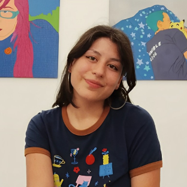

presentación

Vegana por los animales. Alegre victima del Sistema de Distribución de Gatos, con tres gatitos rescatados. Practico pilates en mi tiempo libre para despejarme. En cuanto al diseño, estoy buscando nuevos proyectos y desafíos creativos.